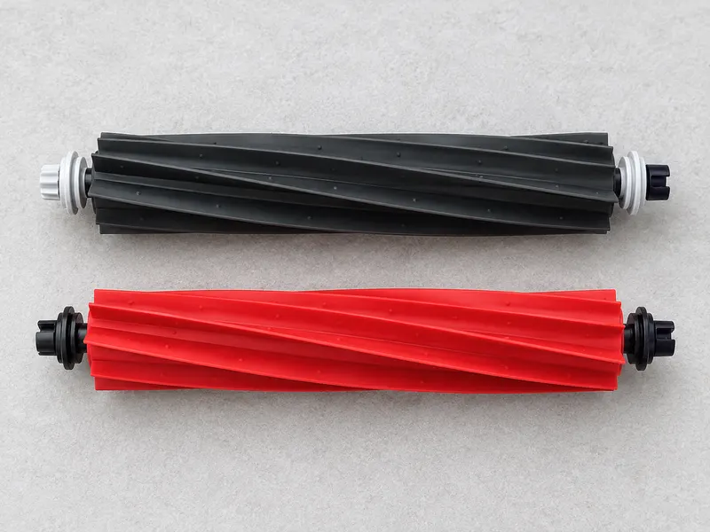

로보락 (Roborock)
로보락 S8 MaxV Ultra 듀얼 롤러, 새 브러시 구매 전에 보는 마모 상태
글·구성: 제이상점 · 기종별 소모품 규격 요약본 (상세 사진과 관리 전문은 아래 네이버 블로그 모바일 원문에서 확인하실 수 있습니다.)

핵심 관리 · 선택 체크포인트
- 판매자 안내｜제이상점이 제조사 공식 설명서와 자사 상품 정보를 조사해 직접 작성했습니다.
- 로보락 S8 MaxV Ultra 듀얼 롤러가 지저분해 보이면 곧바로 새 브러시를 주문해야 할까요?
- 상품 상세의 두 롤러를 참고해 전체 형태를 살펴보도록 구성한 예시입니다.
- 공식 S8 MaxV Ultra 설명서 D1은 메인 브러시 양끝의 엉킨 머리카락과 이물을 제거한 뒤 관련 부품을 다시 조립하는 순서를 안내합니다.
- 이물질을 제거했다고 찢어진 듯한 고무까지 복구된 것은 아닙니다.
부품 규격 · 점검 기준표
| 관찰할 위치 | 사진·메모에 남길 내용 | 따로 확인할 질문 |
|---|---|---|
| 고무 표면의 한 구간 | 찢김·갈라짐·눌림처럼 보이는 위치 | 이물 제거 후에도 같은 모습인가요? |
| 롤러 양끝 | 감긴 머리카락과 제거 후 보이는 상태 | 남은 것이 이물인지 부품 손상인지 애매한가요? |
| 끝부품과 결합부 | 깨짐·어긋남처럼 보이는 부분 | 해당 부품의 상태 확인이 필요한가요? |
| 두 롤러 전체 | 각각의 전체 모습과 의심 위치 표시 | 어느 롤러의 어느 쪽인지 구분되나요? |
자주 묻는 질문 (FAQ)
Q. 로보락S8MaxVUltra의 고무 표면의 한 구간 규격과 관리 기준은 무엇인가요?
A. 찢김·갈라짐·눌림처럼 보이는 위치 규격을 사용하며, 이물 제거 후에도 같은 모습인가요? 기준으로 점검·교체하면 청소 효율을 안정적으로 유지할 수 있습니다.
Q. 로보락S8MaxVUltra의 롤러 양끝 규격과 관리 기준은 무엇인가요?
A. 감긴 머리카락과 제거 후 보이는 상태 규격을 사용하며, 남은 것이 이물인지 부품 손상인지 애매한가요? 기준으로 점검·교체하면 청소 효율을 안정적으로 유지할 수 있습니다.
Q. 로보락S8MaxVUltra의 끝부품과 결합부 규격과 관리 기준은 무엇인가요?
A. 깨짐·어긋남처럼 보이는 부분 규격을 사용하며, 해당 부품의 상태 확인이 필요한가요? 기준으로 점검·교체하면 청소 효율을 안정적으로 유지할 수 있습니다.